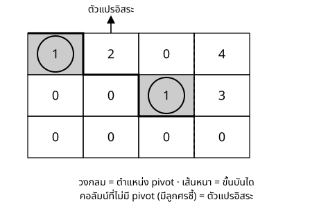

Maths Fundamentals for DS & CS — สัปดาห์ 02
จะเรียน:
สิ่งที่ต้องมีมาก่อน: row reduction เชิงกลไก (เรียนมาแล้ว)
สามการดำเนินการที่ใช้ได้ในการกำจัดตัวแปร
ต่างจากสัปดาห์ 1 ตรงนี้ — ไม่มีการยกกำลังสอง ไม่มีการคูณด้วยนิพจน์ที่มีตัวแปร ไม่มีการรวมพจน์ $\log$ ทุกบรรทัดจึงเป็นความสัมพันธ์แบบสมมูล
ระบบสมการทั่วไปเขียนเป็น เมทริกซ์แต่งเติม (augmented matrix) ได้ว่า
$$ \begin{aligned} a_{11}x + a_{12}y + a_{13}z &= b_1 \\ a_{21}x + a_{22}y + a_{23}z &= b_2 \\ a_{31}x + a_{32}y + a_{33}z &= b_3 \end{aligned} \quad\Longrightarrow\quad \left[\begin{array}{ccc|c} a_{11} & a_{12} & a_{13} & b_1 \\ a_{21} & a_{22} & a_{23} & b_2 \\ a_{31} & a_{32} & a_{33} & b_3 \end{array}\right] $$
แต่ละแถว = หนึ่งสมการ · สามคอลัมน์แรก = สัมประสิทธิ์ $x,y,z$ · คอลัมน์ขวาสุด (คั่นด้วยเส้น) = ค่าคงตัว
สัญกรณ์แถวมาตรฐาน ที่จะกำกับทุกขั้นตอนจากนี้แทนป้าย "E2 − 2E1"
$$ R_i \leftrightarrow R_j \qquad R_i \to c\,R_i \;(c\ne0) \qquad R_i \to R_i + c\,R_j $$
สลับแถว · คูณแถวด้วยค่าคงตัว · แทนที่แถว $i$ ด้วยแถว $i$ บวก $c$ เท่าของแถว $j$
เป้าหมายของ row operation คือทำให้เมทริกซ์สัมประสิทธิ์เป็นขั้นบันได — pivot ของแต่ละแถวเลื่อนไปทางขวาเรื่อย ๆ เมื่อไล่ลงล่าง เช่น
$$ \left[\begin{array}{ccc|c} \underline{1} & 1 & 1 & 6 \\ 0 & \underline{1} & -2 & -4 \\ 0 & 0 & \underline{-7} & -21 \end{array}\right] $$
สองคำที่ต้องแยกให้ออก
$$ \text{จำนวนตัวแปรอิสระ} = (\text{จำนวนตัวแปร}) - (\text{จำนวน pivot}) $$
ทำไมเรียกว่า "อิสระ": เพราะสามารถแทนค่าด้วย จำนวนจริงใดก็ได้ โดยระบบยังคงสอดคล้องเสมอ ส่วนตัวแปรนำจะถูกกำหนดค่าตามมาโดยอัตโนมัติ

| อ่านเจออะไร | จำนวนผลเฉลย | เซตผลเฉลย |
|---|---|---|
| มีแถว $0 = c$ โดย $c \ne 0$ | ไม่มีผลเฉลย | $\varnothing$ |
| ไม่มีแถวขัดแย้ง และ pivot $=$ ตัวแปร | ผลเฉลยเดียว | จุดเดียว |
| ไม่มีแถวขัดแย้ง และ pivot $<$ ตัวแปร | มีมากมาย | มิติ $=$ จำนวนตัวแปรอิสระ |
ความหมายเชิงเรขาคณิต: สองตัวแปร = เส้นตรง · สามตัวแปร = ระนาบ · การแก้ระบบ = หาจุดตัดร่วม
โจทย์: แก้ $x+y+z=6$, $\;2x-y+z=3$, $\;x+2y-z=2$
$$ \left[\begin{array}{ccc|c} 1 & 1 & 1 & 6 \\ 2 & -1 & 1 & 3 \\ 1 & 2 & -1 & 2 \end{array}\right] \;\xrightarrow[R_3 \to R_3 - R_1]{R_2 \to R_2 - 2R_1}\; \left[\begin{array}{ccc|c} 1 & 1 & 1 & 6 \\ 0 & -3 & -1 & -9 \\ 0 & 1 & -2 & -4 \end{array}\right] $$
แปลผล: คอลัมน์ $x$ ใต้ pivot แถวแรกเป็นศูนย์แล้ว แถว 2 และ 3 คือสมการ $-3y-z=-9$ และ $y-2z=-4$ — ตัวแปร $x$ หายไปจากทั้งสองแถวนี้แล้ว
$$ \left[\begin{array}{ccc|c} 1 & 1 & 1 & 6 \\ 0 & -3 & -1 & -9 \\ 0 & 1 & -2 & -4 \end{array}\right] \;\xrightarrow{R_2 \leftrightarrow R_3}\; \left[\begin{array}{ccc|c} 1 & 1 & 1 & 6 \\ 0 & 1 & -2 & -4 \\ 0 & -3 & -1 & -9 \end{array}\right] \;\xrightarrow{R_3 \to R_3 + 3R_2}\; \left[\begin{array}{ccc|c} 1 & 1 & 1 & 6 \\ 0 & 1 & -2 & -4 \\ 0 & 0 & -7 & -21 \end{array}\right] $$
อ่านผลลัพธ์ตรงจากเมทริกซ์: pivot สามตัว ($1,1,-7$) = จำนวนตัวแปร ไม่มีแถวขัดแย้ง → ผลเฉลยเดียว ยังไม่ต้องคำนวณอะไรต่อก็รู้คำตอบแบบนี้ได้แล้ว
$$ \left[\begin{array}{ccc|c} 1 & 1 & 1 & 6 \\ 0 & 1 & -2 & -4 \\ 0 & 0 & -7 & -21 \end{array}\right] \;\Longrightarrow\; \begin{aligned} x+y+z&=6 \\ y-2z&=-4 \\ -7z&=-21 \end{aligned} \;\Longrightarrow\; z=3,\; y=2,\; x=1 $$
ตรวจคำตอบ: แทน $(1,2,3)$ กลับเข้าสมการตั้งต้น (ไม่ใช่เมทริกซ์ที่จัดรูปแล้ว) ✓ ทุกสมการ
ตอบ: $\{(1,2,3)\}$
โจทย์: แก้ $x+2y-z=3$, $\;2x+5y+z=10$, $\;x+3y+2z=7$
$$ \left[\begin{array}{ccc|c} 1 & 2 & -1 & 3 \\ 2 & 5 & 1 & 10 \\ 1 & 3 & 2 & 7 \end{array}\right] \;\xrightarrow[R_3 \to R_3 - R_1]{R_2 \to R_2 - 2R_1}\; \left[\begin{array}{ccc|c} 1 & 2 & -1 & 3 \\ 0 & 1 & 3 & 4 \\ 0 & 1 & 3 & 4 \end{array}\right] $$
แปลผล: แถว 2 และแถว 3 กลายเป็น $y+3z=4$ เหมือนกันโดยสมบูรณ์ — สัญญาณว่าสมการที่สามไม่ได้พาข้อมูลใหม่เข้ามาเลย
$$ \left[\begin{array}{ccc|c} 1 & 2 & -1 & 3 \\ 0 & 1 & 3 & 4 \\ 0 & 1 & 3 & 4 \end{array}\right] \;\xrightarrow{R_3 \to R_3 - R_2}\; \left[\begin{array}{ccc|c} 1 & 2 & -1 & 3 \\ 0 & 1 & 3 & 4 \\ 0 & 0 & 0 & 0 \end{array}\right] $$
$0=0$ ไม่ใช่แถวขัดแย้ง เพียงแต่ไม่ให้ข้อมูลใหม่ · คอลัมน์ $z$ ไม่มี pivot เลย → $z$ คือตัวแปรอิสระ
$$ \text{pivot}=2,\;\text{ตัวแปร}=3 \;\Rightarrow\; \text{ตัวแปรอิสระ}=1 \qquad \text{ตั้ง } z=t $$
$$ \left[\begin{array}{ccc|c} 1 & 2 & -1 & 3 \\ 0 & 1 & 3 & 4 \\ 0 & 0 & 0 & 0 \end{array}\right] \;\Longrightarrow\; \begin{aligned} x+2y-z&=3 \\ y+3z&=4 \end{aligned} $$
$$ y = 4-3t \qquad\Longrightarrow\qquad x = 7t-5 $$
ตอบ: $(x,y,z)=(7t-5,\;4-3t,\;t),\; t\in\mathbb{R}$ — เส้นตรงหนึ่งเส้น
ขั้นตอนตายตัวสามขั้น
ข้อผิดพลาดที่พบมากที่สุด: หยุดที่ "$y = 4-3z$ และ $x=7z-5$" — นี่เป็นการบรรยายความสัมพันธ์ ไม่ใช่การบอกเซตผลเฉลย
ตรวจคำตอบ: แทนพารามิเตอร์อย่างน้อย 3 ค่าที่ต่างกัน ถ้าถูกทั้งสามแทบไม่มีทางที่สูตรจะผิด
โจทย์: แก้ $x+y+2z=4$, $\;2x+3y+5z=9$, $\;3x+5y+8z=16$
$$ \left[\begin{array}{ccc|c} 1 & 1 & 2 & 4 \\ 2 & 3 & 5 & 9 \\ 3 & 5 & 8 & 16 \end{array}\right] \;\xrightarrow[R_3 \to R_3 - 3R_1]{R_2 \to R_2 - 2R_1}\; \left[\begin{array}{ccc|c} 1 & 1 & 2 & 4 \\ 0 & 1 & 1 & 1 \\ 0 & 2 & 2 & 4 \end{array}\right] $$
ดูเหมือนแถว 3 เป็นแถว 2 คูณสอง ($0,2,2$ vs $0,1,1$) — แต่ต้องเช็คคอลัมน์ขวาสุดด้วยเสมอ: $2\times1=2$ แต่ค่าคงตัวของแถว 3 คือ $4\ne2$ แล้ว
$$ \left[\begin{array}{ccc|c} 1 & 1 & 2 & 4 \\ 0 & 1 & 1 & 1 \\ 0 & 2 & 2 & 4 \end{array}\right] \;\xrightarrow{R_3 \to R_3 - 2R_2}\; \left[\begin{array}{ccc|c} 1 & 1 & 2 & 4 \\ 0 & 1 & 1 & 1 \\ 0 & 0 & 0 & 2 \end{array}\right] $$
แถว 3 อ่านว่า $0x+0y+0z=2$ คือ $0=2$ — แถวขัดแย้ง สัมประสิทธิ์ทุกตัวเป็นศูนย์ แต่คอลัมน์ค่าคงตัวไม่เป็นศูนย์ นี่คือรูปแบบเดียวที่ต้องระวังเสมอ
ตอบ: $\varnothing$ — สมการที่สาม "ควรจะ" ซ้ำข้อมูล แต่ค่าที่ให้มาไม่ตรงกับที่ควรจะเป็น
โจทย์: แก้ $x+2y+z=8$, $2x+y+3z=11$, $3x+3y+4z=19$, $3x+5z=14$
กำจัด $x$ แล้วพบว่า ทั้งสามแถวล่างเป็นสมการเดียวกันหมด ($-3y+z=-5$ คูณด้วยค่าคงตัวต่าง ๆ)
$$ \text{pivot}=2,\;\text{ตัวแปร}=3 \;\Rightarrow\; \text{ตัวแปรอิสระ}=1 $$
ตอบ: $(x,y,z)=(13-5t,\;t,\;3t-5),\;t\in\mathbb{R}$
สมการที่ 3 และ 4 ไม่ได้พาข้อมูลใหม่เข้ามาเลย — เขียนสมการเพิ่มกี่สมการก็ไม่ช่วย ถ้าสมการนั้นไม่ใช่ข้อมูลใหม่
| ที่พลาด | วิธีกัน |
|---|---|
| $0=0$ แล้วคิดว่าไม่มีผลเฉลย | $0=0$ คือ "ไม่ให้ข้อมูล" ตรงข้ามกับ $0=c\ne0$ ที่ "ขัดแย้ง" |
| ตอบแค่ "$x=7z-5, y=4-3z$" แล้วหยุด | ต้องตั้งพารามิเตอร์แล้วเขียนสิ่งอันดับ |
| กำจัดฝั่งซ้ายแต่ลืมฝั่งขวา | เขียนเมทริกซ์แต่งเติมเสมอ |
| นับตัวแปรอิสระจากจำนวนสมการ | นับจาก จำนวน pivot เท่านั้น |
สมมติมีฟีเจอร์ "ความสูงเป็นเซนติเมตร" และ "ความสูงเป็นเมตร" อยู่ในตารางเดียวกัน — สองฟีเจอร์นี้เป็นสัดส่วนกันโดยสมบูรณ์ (คูณกันด้วยค่าคงตัว 100 เสมอ) ระบบสมการปกติ (normal equations) ที่ได้ขาด pivot ไปหนึ่งตัว มีตัวแปรอิสระปรากฏขึ้น
ผล: มีชุดสัมประสิทธิ์เป็นอนันต์ที่ให้การทำนายเหมือนกันหมด สัมประสิทธิ์แต่ละตัวตีความไม่ได้เลย แม้การทำนายจะยังใช้ได้
ปรากฏการณ์นี้ชื่อ multicollinearity แบบสมบูรณ์ (perfect multicollinearity) — กลไกเบื้องหลังคือสิ่งที่เพิ่งเรียนทั้งหมด
| ฟีเจอร์สัมพันธ์กันแบบไหน | เกิดตัวแปรอิสระไหม | ผลที่ตามมา | |
|---|---|---|---|
| สมบูรณ์ (perfect) | เป็นสัดส่วนกันเชิงเส้นพอดี (เช่น cm = 100 × m) | เกิด — ขาด pivot จริง | สัมประสิทธิ์เป็นอนันต์ที่ทำนายเหมือนกันหมด |
| ทั่วไป (imperfect) | สัมพันธ์กันสูงแต่ไม่พอดี (เช่น ส่วนสูงกับน้ำหนัก) | ไม่เกิด — pivot ยังครบ | ระบบใกล้เอกฐาน (near-singular) สัมประสิทธิ์ไวต่อความคลาดเคลื่อนของข้อมูลมาก |
ข้อควรระวัง: อย่าสรุปว่า "ฟีเจอร์สัมพันธ์กันสูง = มีตัวแปรอิสระ" เสมอไป — ต้องเช็คว่าเป็นสัดส่วนกันพอดีหรือไม่ ถ้าไม่พอดี pivot ยังอยู่ครบ เพียงแต่ระบบ "บอบบาง" ขึ้นเท่านั้น
$$ \text{ตั้งฟังก์ชันความสูญเสีย} \to \text{หาอนุพันธ์} \to \text{ให้เท่ากับศูนย์} \to \textbf{ระบบสมการเชิงเส้น} \to \text{แก้ระบบ} $$
ในสัปดาห์ 5 จะมีการสร้างสูตร linear regression ขึ้นเอง และขั้นที่สี่คือระบบ $2\times 2$ ที่จะแก้ด้วยกลไกวันนี้โดยตรง
กรณี $\varnothing$ ก็มีสถานการณ์คู่ขนานในงานจริง — สมการที่ "ควร" เข้ากันแต่ข้อมูลจริงมีสัญญาณรบกวนทำให้ไม่เข้ากัน นี่คือสะพานเข้าหัวข้อถัดไป
จบช่วงนี้ควรทำได้:
ตั้งค้างไว้: ถ้าสมการมากกว่าตัวแปรแล้วไม่สอดคล้องเลย จะทำอย่างไร — ช่วงถัดไป
การบ้าน: exercises/ex_02.md ข้อ 1–7 · ตัวอย่างระบบไม่สอดคล้องแบบผสม (1.4) มีแต่ใน note